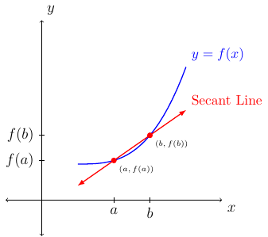

Section 2.8
Basic Operations
Definition 31
Given two functions \(f\) and \(g\), then for all \(x\) for which \(f(x)\) and \(g(x)\) is defined we have:
\((f+g)(x)=f(x)+g(x)\)
\((f-g)(x)=f(x)-g(x)\)
\((f\cdot g)(x)=f(x)\cdot g(x)\)
\((\frac{f}{g})(x)=\frac{f(x)}{g(x)}\) provided \(g\) is not the zero function.
The domain of \(f+g\), \(f-g\), and \(f\cdot g\) is the set of all \(x\) such that \(x\) is in the intersection of the domain of \(f\) and the domain of \(g\).
The domain of \(\frac{f}{g}\) is the set of all \(x\) such that \(x\) is in the intersection of the domain of \(f\) and the domain of \(g\) such that \(g(x)\ne 0\).
Difference Quotient
The average rate of change of a function \(f\) over an interval \([a,b]\) is the following:
The average rate of change is also the slope of the secant line as shown below:

If we let \(a=x\) and set \(h\) to be the distance between \(a\) and \(b\) (or the magnitude of the interval or the change in \(x\)) we have \(h=b-a\) (or \(\Delta x = b-a\)). Then the above picture would change to the following:
Then we can rewrite the average rate of change of a function \(f\) over an interval \([a,b]\) where \(x=a\) and \(h=b-a\) as the following:
We say \(\frac{f(x+h)-f(x)}{h}\) is the difference quotient.
Examples
Example 36
Let \(f(x)=3x^2-2x+4\). Find and simplify the difference quotient.
Solution:
We are given \(f(x)=3x^2-2x+4\). Next, we will find \(f(x+h)\).
Remember \((x+h)^2\ne x^2 +h^2\).
Next, we will simplify \(f(x+h)-f(x)\).
Next, we will simplify \(\frac{f(x+h)-f(x)}{h}\).
Therefore, we have:
We have seen that if \(f(x)=3x^2-2x+4\), then we have two ways to find the average rate of change of \(f\) over the interval, say, \([1,4]\).
First way:
Second way; where \(h=4-1=3\) and \(x=1\):
The second method will be used often in Calculus One and beyond.
Example 37
Let \(f(x)=\frac{1}{x}\). Simplify the difference quotient.
Solution:
First, we are given \(f(x)=\frac{1}{x}\). Next, we want state \(f(x+h)=\frac{1}{x+h}\). Next, we want to simplify \(f(x+h)-f(x)\) by adding the two rational expressions using common denominators.
Next, using the fact \(\frac{a}{b}\div \frac{c}{d}=\frac{a}{b}\cdot \frac{d}{c}\) and \(h=\frac{h}{1}\) we have the following.
Therefore, we have \(\frac{f(x+h)-f(x)}{h} = \frac{-1}{x(x+h)}\)
Example 38
Let \(f(x)=\sqrt{x}\). Simplify the difference quotient.
Solution:
We are given \(f(x)=\sqrt{x}\). Next, we find \(f(x+h)=\sqrt{x+h}\). Remember \(\sqrt{x+h}\ne\sqrt{x}+\sqrt{h}\). We next find \(f(x+h)-f(x)=\sqrt{x+h}-\sqrt{x}\) but that is as far as we can simplify for that expression.
To finish simplifying the difference quotient we need to remember \((\sqrt{a}+\sqrt{b})(\sqrt{a}-\sqrt{b})=a-b\). This identity is related to the term conjugate. The conjugate of \((\sqrt{x+h}-\sqrt{x}\) is \((\sqrt{x+h}+\sqrt{x})\). We will use the conjugate to rationalize the numerator of the difference quotient.
Therefore, we have \(\frac{f(x+h)-f(x)}{h} = \frac{1}{\sqrt{x+h}+\sqrt{x}}\).
Composition of Functions
Definition 32
If \(f\) and \(g\) are functions then the composite function, or composition, of \(f\) and \(g\) is:
The domain of \(f\circ g\) is the set of all \(x\) such that \(x\) is in the domain of \(g\) such that \(g(x)\) is in the domain of \(f\).
Example 39
Let the plot of \(f\) be the following:
Let the plot of \(g\) be the following:
Evaluate \(f(g(1))\).
Solution:
First, the graph shows that \(g(1)=3\). This means, \(f(g(1))=f(3)\). From the graph, we see that \(f(3)=2\). Therefore, \(f(g(1))=2\).
Evaluate \(g(f(1))\).
Solution:
First, the graph shows that \(f(1)=1\). This means, \(g(f(1))=g(1)\). From the graph, we see that \(g(1)=3\). Therefore, \(g(f(1))=3\).
The last example shows that, in general, \(f(g(x))\ne g(f(x))\). Later we will see a special case where we need \(f(g(x))=g(f(x))\).
Example 40
Let \(f(x)=\sqrt{x+1}\) and \(g(x)=\frac{1}{x+1}\).
Find \(f(g(x))\).
Solution:
Find \(g(f(x))\).
Solution:
Example 41
Let \(h(x)=f(g(x))\) such that \(h(x)=\sqrt{x^2+x+1}\). Find \(f(x)\) and \(g(x)\).
Solution:
The outside function is the square root function. This means \(f(x)=\sqrt{x}\). The inside function is a polynomial. This means \(g(x)=x^2+x+1\).